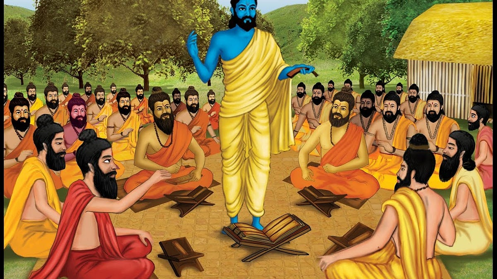

Spiritual & Philosophical Schools of India

India’s spiritual and philosophical traditions have profoundly influenced global thought, shaping ideas about existence, consciousness, and liberation. These traditions explore the nature of reality, ethics, and the path to self-realization. Rooted in ancient scriptures and practices, they continue to inspire seekers worldwide through meditation, yoga, and holistic well-being.
The Six Classical Schools of Indian Philosophy
Indian philosophy is traditionally categorized into six Darshanas (schools of thought), each offering unique perspectives on life, knowledge, and liberation.
1. Nyaya (Logic & Reasoning)
- Founded by Gautama Rishi, this school focuses on logic, reasoning, and systematic inquiry.
- Emphasizes the use of debate and rational thought to attain true knowledge (pramana).
- Considered the foundation of Indian logic and critical thinking.
2. Vaisheshika (Atomism & Metaphysics)
- Developed by Sage Kanada, this school explains the nature of reality through atomic theory.
- Believes everything in the universe is made of Parmanu (atoms) and governed by laws of cause and effect.
- Contributed significantly to early Indian scientific thought.
3. Samkhya (Dualism & Enumeration)
- One of the oldest philosophical systems, attributed to Sage Kapila.
- Distinguishes between Purusha (consciousness) and Prakriti (material nature).
- Believes in liberation (moksha) through self-awareness and detachment from material existence.
4. Yoga (Union & Discipline)
- Closely related to Samkhya, formalized in Patanjali’s Yoga Sutras.
- Describes an eightfold path (Ashtanga Yoga) for spiritual enlightenment, including:
- Yama (ethical discipline)
- Niyama (self-discipline)
- Asana (postures)
- Pranayama (breath control)
- Pratyahara (withdrawal of senses)
- Dharana (concentration)
- Dhyana (meditation)
- Samadhi (liberation)
- Forms the philosophical basis of modern yoga practices.
5. Mimamsa (Ritualism & Dharma)
- Founded by Jaimini, this school emphasizes Vedic rituals and dharma (duty) as the path to liberation.
- Focuses on karma (action) and the importance of performing duties without attachment.
- Serves as the philosophical foundation for Hindu ritualistic practices.
6. Vedanta (Knowledge & Self-Realization)
- Derived from the Upanishads, Vedanta explores the nature of the self (Atman) and ultimate reality (Brahman).
- Major branches of Vedanta:
- Advaita Vedanta (Non-Dualism) – Founded by Adi Shankaracharya, teaches that Atman and Brahman are one.
- Vishishtadvaita (Qualified Non-Dualism) – Proposed by Ramanujacharya, states that the soul is distinct but dependent on Brahman.
- Dvaita (Dualism) – Founded by Madhvacharya, asserts a clear distinction between the individual soul and Brahman.
Jainism & Buddhism: Paths of Non-Violence and Mindfulness
Jainism (Path of Ahimsa and Liberation)
- Founded by Mahavira, emphasizes Ahimsa (non-violence), Aparigraha (non-attachment), and Anekantavada (multiplicity of truths).
- Divides reality into Jiva (soul) and Ajiva (non-soul), advocating self-discipline for liberation.
- Follows strict ethical practices, including vegetarianism and non-possessiveness.
Buddhism (The Middle Path & Mindfulness)
- Founded by Gautama Buddha, teaching the Four Noble Truths:
- Life is suffering (Dukkha).
- Suffering arises from desire (Tanha).
- Suffering ends by overcoming desire.
- The Eightfold Path (right view, intention, speech, action, livelihood, effort, mindfulness, concentration) leads to enlightenment.
- Divided into three major traditions:
- Theravāda (original teachings and monastic discipline).
- Mahayana (emphasis on compassion and Bodhisattva path).
- Vajrayana (Tibetan Buddhism with esoteric practices).
The Bhakti & Sufi Movements: Devotion as a Path to the Divine
Bhakti Movement (Hindu Devotional Path)
- Flourished between the 8th and 17th centuries, emphasizing love and devotion to a personal god.
- Bhakti saints preached in local languages, making spirituality accessible to all.
- Major Bhakti poets and saints:
- Mirabai (Krishna devotion).
- Tulsidas (Ramcharitmanas).
- Kabir (bridged Hindu and Muslim teachings).
- Basava (Veerashaiva movement in Karnataka).
Sufi Movement (Islamic Mysticism & Love for the Divine)
- Sufism emphasizes love, devotion, and direct experience of God (Allah).
- Sufi saints spread messages of unity and peace, beyond religious boundaries.
- Major Sufi saints:
- Khwaja Moinuddin Chishti (founder of Chishti order in India).
- Guru Nanak (founder of Sikhism, blending Sufi and Hindu influences).
Conclusion
These philosophical schools and spiritual movements represent India’s rich tradition of thought and spirituality. They offer valuable insights into the nature of existence, consciousness, and the path to self-realization. The ideas and practices from these schools continue to influence millions, both in India and around the world, guiding individuals towards a deeper understanding of themselves and the universe.